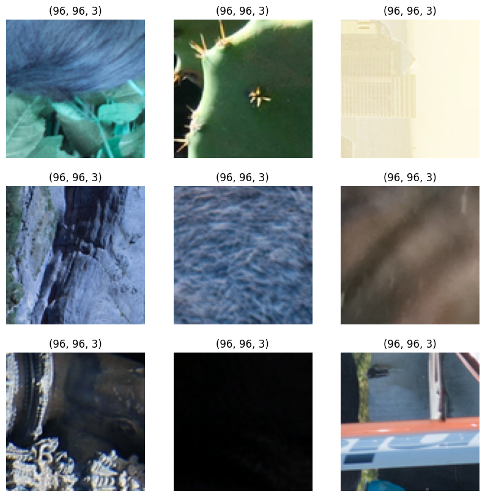
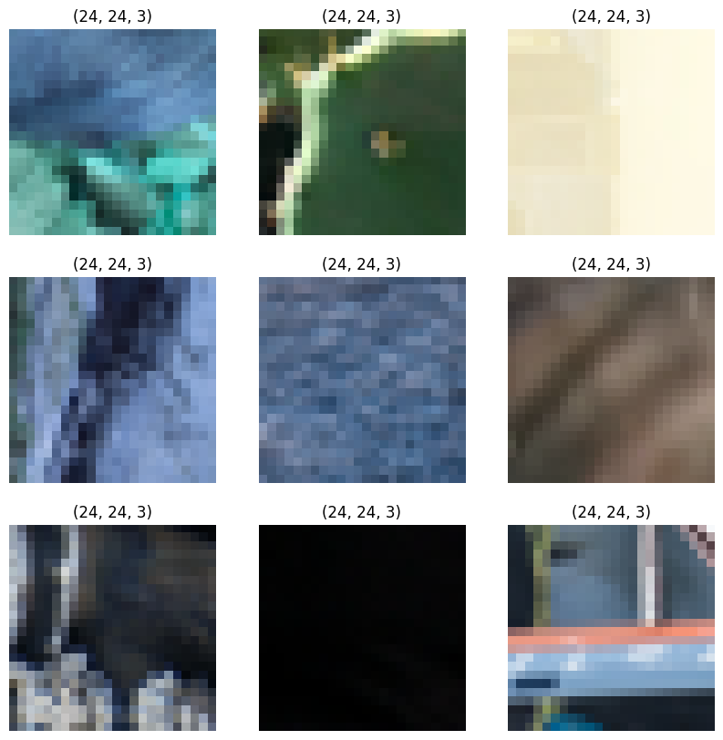
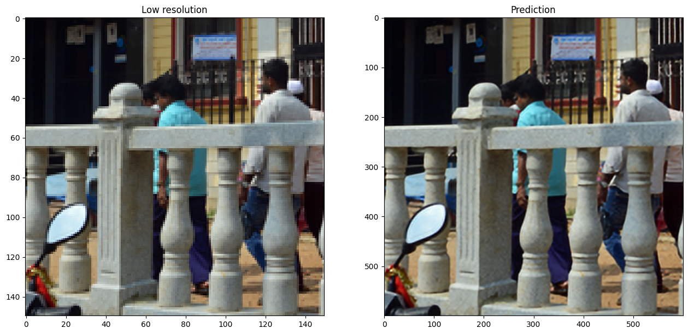
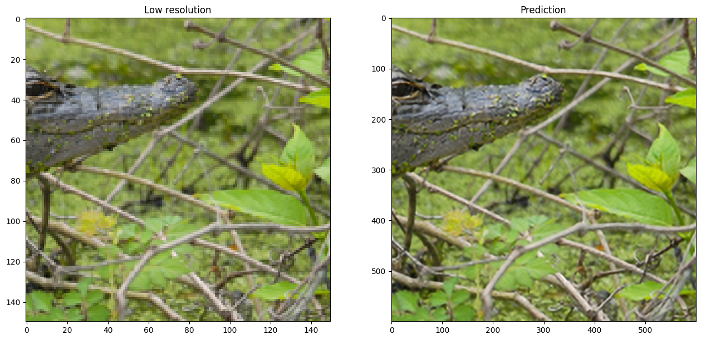
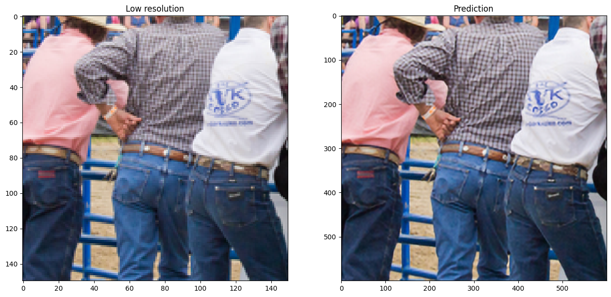
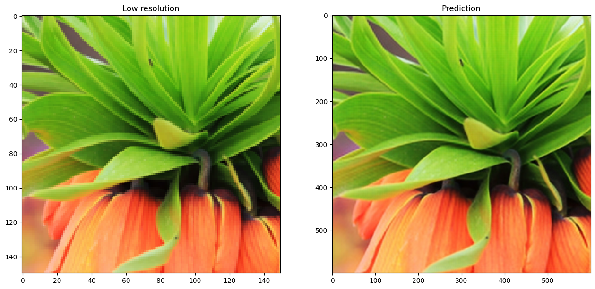

Enhanced Deep Residual Networks for single-image super-resolution
Author: Gitesh Chawda
Date created: 2022/04/07
Last modified: 2024/08/27
Description: Training an EDSR model on the DIV2K Dataset.

Introduction
In this example, we implement Enhanced Deep Residual Networks for Single Image Super-Resolution (EDSR) by Bee Lim, Sanghyun Son, Heewon Kim, Seungjun Nah, and Kyoung Mu Lee.
The EDSR architecture is based on the SRResNet architecture and consists of multiple residual blocks. It uses constant scaling layers instead of batch normalization layers to produce consistent results (input and output have similar distributions, thus normalizing intermediate features may not be desirable). Instead of using a L2 loss (mean squared error), the authors employed an L1 loss (mean absolute error), which performs better empirically.
Our implementation only includes 16 residual blocks with 64 channels.
Alternatively, as shown in the Keras example Image Super-Resolution using an Efficient Sub-Pixel CNN, you can do super-resolution using an ESPCN Model. According to the survey paper, EDSR is one of the top-five best-performing super-resolution methods based on PSNR scores. However, it has more parameters and requires more computational power than other approaches. It has a PSNR value (≈34db) that is slightly higher than ESPCN (≈32db). As per the survey paper, EDSR performs better than ESPCN.
Paper: A comprehensive review of deep learning based single image super-resolution
Comparison Graph:

Imports
import os
os.environ["KERAS_BACKEND"] = "tensorflow"
import numpy as np
import tensorflow as tf
import tensorflow_datasets as tfds
import matplotlib.pyplot as plt
import keras
from keras import layers
from keras import ops
AUTOTUNE = tf.data.AUTOTUNE
Download the training dataset
We use the DIV2K Dataset, a prominent single-image super-resolution dataset with 1,000 images of scenes with various sorts of degradations, divided into 800 images for training, 100 images for validation, and 100 images for testing. We use 4x bicubic downsampled images as our "low quality" reference.
# Download DIV2K from TF Datasets
# Using bicubic 4x degradation type
div2k_data = tfds.image.Div2k(config="bicubic_x4")
div2k_data.download_and_prepare()
# Taking train data from div2k_data object
train = div2k_data.as_dataset(split="train", as_supervised=True)
train_cache = train.cache()
# Validation data
val = div2k_data.as_dataset(split="validation", as_supervised=True)
val_cache = val.cache()
Flip, crop and resize images
def flip_left_right(lowres_img, highres_img):
"""Flips Images to left and right."""
# Outputs random values from a uniform distribution in between 0 to 1
rn = keras.random.uniform(shape=(), maxval=1)
# If rn is less than 0.5 it returns original lowres_img and highres_img
# If rn is greater than 0.5 it returns flipped image
return ops.cond(
rn < 0.5,
lambda: (lowres_img, highres_img),
lambda: (
ops.flip(lowres_img),
ops.flip(highres_img),
),
)
def random_rotate(lowres_img, highres_img):
"""Rotates Images by 90 degrees."""
# Outputs random values from uniform distribution in between 0 to 4
rn = ops.cast(
keras.random.uniform(shape=(), maxval=4, dtype="float32"), dtype="int32"
)
# Here rn signifies number of times the image(s) are rotated by 90 degrees
return tf.image.rot90(lowres_img, rn), tf.image.rot90(highres_img, rn)
def random_crop(lowres_img, highres_img, hr_crop_size=96, scale=4):
"""Crop images.
low resolution images: 24x24
high resolution images: 96x96
"""
lowres_crop_size = hr_crop_size // scale # 96//4=24
lowres_img_shape = ops.shape(lowres_img)[:2] # (height,width)
lowres_width = ops.cast(
keras.random.uniform(
shape=(), maxval=lowres_img_shape[1] - lowres_crop_size + 1, dtype="float32"
),
dtype="int32",
)
lowres_height = ops.cast(
keras.random.uniform(
shape=(), maxval=lowres_img_shape[0] - lowres_crop_size + 1, dtype="float32"
),
dtype="int32",
)
highres_width = lowres_width * scale
highres_height = lowres_height * scale
lowres_img_cropped = lowres_img[
lowres_height : lowres_height + lowres_crop_size,
lowres_width : lowres_width + lowres_crop_size,
] # 24x24
highres_img_cropped = highres_img[
highres_height : highres_height + hr_crop_size,
highres_width : highres_width + hr_crop_size,
] # 96x96
return lowres_img_cropped, highres_img_cropped
Prepare a tf.data.Dataset object
We augment the training data with random horizontal flips and 90 rotations.
As low resolution images, we use 24x24 RGB input patches.
def dataset_object(dataset_cache, training=True):
ds = dataset_cache
ds = ds.map(
lambda lowres, highres: random_crop(lowres, highres, scale=4),
num_parallel_calls=AUTOTUNE,
)
if training:
ds = ds.map(random_rotate, num_parallel_calls=AUTOTUNE)
ds = ds.map(flip_left_right, num_parallel_calls=AUTOTUNE)
# Batching Data
ds = ds.batch(16)
if training:
# Repeating Data, so that cardinality if dataset becomes infinte
ds = ds.repeat()
# prefetching allows later images to be prepared while the current image is being processed
ds = ds.prefetch(buffer_size=AUTOTUNE)
return ds
train_ds = dataset_object(train_cache, training=True)
val_ds = dataset_object(val_cache, training=False)
Visualize the data
Let's visualize a few sample images:
lowres, highres = next(iter(train_ds))
# High Resolution Images
plt.figure(figsize=(10, 10))
for i in range(9):
ax = plt.subplot(3, 3, i + 1)
plt.imshow(highres[i].numpy().astype("uint8"))
plt.title(highres[i].shape)
plt.axis("off")
# Low Resolution Images
plt.figure(figsize=(10, 10))
for i in range(9):
ax = plt.subplot(3, 3, i + 1)
plt.imshow(lowres[i].numpy().astype("uint8"))
plt.title(lowres[i].shape)
plt.axis("off")
def PSNR(super_resolution, high_resolution):
"""Compute the peak signal-to-noise ratio, measures quality of image."""
# Max value of pixel is 255
psnr_value = tf.image.psnr(high_resolution, super_resolution, max_val=255)[0]
return psnr_value


Build the model
In the paper, the authors train three models: EDSR, MDSR, and a baseline model. In this code example, we only train the baseline model.
Comparison with model with three residual blocks
The residual block design of EDSR differs from that of ResNet. Batch normalization layers have been removed (together with the final ReLU activation): since batch normalization layers normalize the features, they hurt output value range flexibility. It is thus better to remove them. Further, it also helps reduce the amount of GPU RAM required by the model, since the batch normalization layers consume the same amount of memory as the preceding convolutional layers.

class EDSRModel(keras.Model):
def train_step(self, data):
# Unpack the data. Its structure depends on your model and
# on what you pass to `fit()`.
x, y = data
with tf.GradientTape() as tape:
y_pred = self(x, training=True) # Forward pass
# Compute the loss value
# (the loss function is configured in `compile()`)
loss = self.compiled_loss(y, y_pred, regularization_losses=self.losses)
# Compute gradients
trainable_vars = self.trainable_variables
gradients = tape.gradient(loss, trainable_vars)
# Update weights
self.optimizer.apply_gradients(zip(gradients, trainable_vars))
# Update metrics (includes the metric that tracks the loss)
self.compiled_metrics.update_state(y, y_pred)
# Return a dict mapping metric names to current value
return {m.name: m.result() for m in self.metrics}
def predict_step(self, x):
# Adding dummy dimension using tf.expand_dims and converting to float32 using tf.cast
x = ops.cast(tf.expand_dims(x, axis=0), dtype="float32")
# Passing low resolution image to model
super_resolution_img = self(x, training=False)
# Clips the tensor from min(0) to max(255)
super_resolution_img = ops.clip(super_resolution_img, 0, 255)
# Rounds the values of a tensor to the nearest integer
super_resolution_img = ops.round(super_resolution_img)
# Removes dimensions of size 1 from the shape of a tensor and converting to uint8
super_resolution_img = ops.squeeze(
ops.cast(super_resolution_img, dtype="uint8"), axis=0
)
return super_resolution_img
# Residual Block
def ResBlock(inputs):
x = layers.Conv2D(64, 3, padding="same", activation="relu")(inputs)
x = layers.Conv2D(64, 3, padding="same")(x)
x = layers.Add()([inputs, x])
return x
# Upsampling Block
def Upsampling(inputs, factor=2, **kwargs):
x = layers.Conv2D(64 * (factor**2), 3, padding="same", **kwargs)(inputs)
x = layers.Lambda(lambda x: tf.nn.depth_to_space(x, block_size=factor))(x)
x = layers.Conv2D(64 * (factor**2), 3, padding="same", **kwargs)(x)
x = layers.Lambda(lambda x: tf.nn.depth_to_space(x, block_size=factor))(x)
return x
def make_model(num_filters, num_of_residual_blocks):
# Flexible Inputs to input_layer
input_layer = layers.Input(shape=(None, None, 3))
# Scaling Pixel Values
x = layers.Rescaling(scale=1.0 / 255)(input_layer)
x = x_new = layers.Conv2D(num_filters, 3, padding="same")(x)
# 16 residual blocks
for _ in range(num_of_residual_blocks):
x_new = ResBlock(x_new)
x_new = layers.Conv2D(num_filters, 3, padding="same")(x_new)
x = layers.Add()([x, x_new])
x = Upsampling(x)
x = layers.Conv2D(3, 3, padding="same")(x)
output_layer = layers.Rescaling(scale=255)(x)
return EDSRModel(input_layer, output_layer)
model = make_model(num_filters=64, num_of_residual_blocks=16)
Train the model
# Using adam optimizer with initial learning rate as 1e-4, changing learning rate after 5000 steps to 5e-5
optim_edsr = keras.optimizers.Adam(
learning_rate=keras.optimizers.schedules.PiecewiseConstantDecay(
boundaries=[5000], values=[1e-4, 5e-5]
)
)
# Compiling model with loss as mean absolute error(L1 Loss) and metric as psnr
model.compile(optimizer=optim_edsr, loss="mae", metrics=[PSNR])
# Training for more epochs will improve results
model.fit(train_ds, epochs=100, steps_per_epoch=200, validation_data=val_ds)
Epoch 1/100
200/200 ━━━━━━━━━━━━━━━━━━━━ 117s 472ms/step - psnr: 8.7874 - loss: 85.1546 - val_loss: 17.4624 - val_psnr: 8.7008
Epoch 10/100
200/200 ━━━━━━━━━━━━━━━━━━━━ 58s 288ms/step - psnr: 8.9519 - loss: 94.4611 - val_loss: 8.6002 - val_psnr: 6.4303
Epoch 20/100
200/200 ━━━━━━━━━━━━━━━━━━━━ 52s 261ms/step - psnr: 8.5120 - loss: 95.5767 - val_loss: 8.7330 - val_psnr: 6.3106
Epoch 30/100
200/200 ━━━━━━━━━━━━━━━━━━━━ 53s 262ms/step - psnr: 8.6051 - loss: 96.1541 - val_loss: 7.5442 - val_psnr: 7.9715
Epoch 40/100
200/200 ━━━━━━━━━━━━━━━━━━━━ 53s 263ms/step - psnr: 8.7405 - loss: 96.8159 - val_loss: 7.2734 - val_psnr: 7.6312
Epoch 50/100
200/200 ━━━━━━━━━━━━━━━━━━━━ 52s 259ms/step - psnr: 8.7648 - loss: 95.7817 - val_loss: 8.1772 - val_psnr: 7.1330
Epoch 60/100
200/200 ━━━━━━━━━━━━━━━━━━━━ 53s 264ms/step - psnr: 8.8651 - loss: 95.4793 - val_loss: 7.6550 - val_psnr: 7.2298
Epoch 70/100
200/200 ━━━━━━━━━━━━━━━━━━━━ 53s 263ms/step - psnr: 8.8489 - loss: 94.5993 - val_loss: 7.4607 - val_psnr: 6.6841
Epoch 80/100
200/200 ━━━━━━━━━━━━━━━━━━━━ 53s 263ms/step - psnr: 8.3046 - loss: 97.3796 - val_loss: 8.1050 - val_psnr: 8.0714
Epoch 90/100
200/200 ━━━━━━━━━━━━━━━━━━━━ 53s 264ms/step - psnr: 7.9295 - loss: 96.0314 - val_loss: 7.1515 - val_psnr: 6.8712
Epoch 100/100
200/200 ━━━━━━━━━━━━━━━━━━━━ 53s 263ms/step - psnr: 8.1666 - loss: 94.9792 - val_loss: 6.6524 - val_psnr: 6.5423
<keras.src.callbacks.history.History at 0x7fc1e8dd6890>
Run inference on new images and plot the results
def plot_results(lowres, preds):
"""
Displays low resolution image and super resolution image
"""
plt.figure(figsize=(24, 14))
plt.subplot(132), plt.imshow(lowres), plt.title("Low resolution")
plt.subplot(133), plt.imshow(preds), plt.title("Prediction")
plt.show()
for lowres, highres in val.take(10):
lowres = tf.image.random_crop(lowres, (150, 150, 3))
preds = model.predict_step(lowres)
plot_results(lowres, preds)




Final remarks
In this example, we implemented the EDSR model (Enhanced Deep Residual Networks for Single Image Super-Resolution). You could improve the model accuracy by training the model for more epochs, as well as training the model with a wider variety of inputs with mixed downgrading factors, so as to be able to handle a greater range of real-world images.
You could also improve on the given baseline EDSR model by implementing EDSR+, or MDSR( Multi-Scale super-resolution) and MDSR+, which were proposed in the same paper.